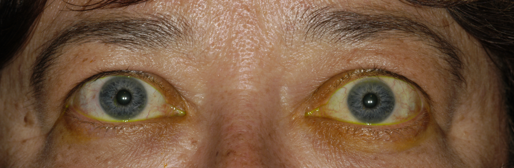
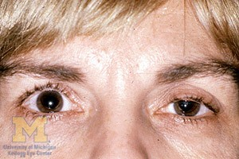
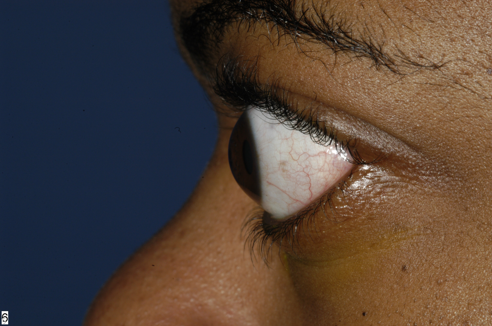
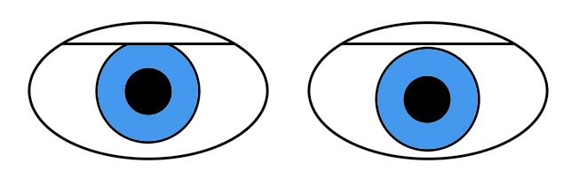

☰
Lid Disorders
Lid Retraction

What is it?
Upper lid elevation so that the sclera becomes visible above the cornea (“upper scleral show”)
Caused by shortening of upper lid tissues or increased sympathetic tone
Common causes: Graves disease, abnormally alert state, anxiety, parkinsonism
Uncommon causes: dorsal midbrain syndrome (“Collier sign”), orbital trauma (“cicatricial retraction”)
What does it look like?
Core clinical features
Patient appears to be “staring”
Lower border of the upper lid creases the sclera rather than a portion of the cornea
Possible accompanying clinical features
Patient reports that the eye feels exposed, dry, or irritated
Upper lid lags behind the eye as the eye moves downward (“lid lag”), as in Graves disease
Ocular and orbital soft tissue is swollen and hyperemic, as in Graves disease
Upper lid fails to lower completely (“lagophthalmos”), as in upper lid scarring, proptosis
Lid retraction disappears when the patient becomes calm, as in anxiety and hyperalert states
Facial expression and blink rate are reduced, as in parkinsonism
Impaired vertical gaze, vertical ocular misalignment, tectal light-near dissociation, or convergence retraction, as in dorsal midbrain syndrome
What else looks like it?

Ptosis of the contralateral upper lid, so that the normal lid looks relatively high

Proptosis

Affected eye is pushed downward by a mass in the upper orbit (“ocular dystopia”)
Physiologically shallow orbits, so that the eyes appear prominent (“exorbitism”)
What should you do?
Verify whether the lid retraction is unilateral or bilateral
Look for these accompanying features to uncover the cause of lid retraction and rule out imitators
Lid lag, as in Graves disease
Irregular lid border contour or scar, as in lid trauma or mass
Upgaze deficit, tectal light-near dissociation, convergence retraction, as in dorsal midbrain syndrome
Bradykinesia, rigidity, tremor, as in parkinsonism
Hyperalert or anxiety state
What will happen?
Tip:
the lid retraction of a hyperalert, anxiety, or parkinsonian state is often mistaken for the lid retraction of Graves disease
Trap:
the most common causes of pseudo lid retraction are contralateral ptosis and proptosis
Lid Disorders
Ptosis
Lid Retraction
Apraxia of Lid Opening
Benign Essential Blepharospasm
Hemifacial Spasm